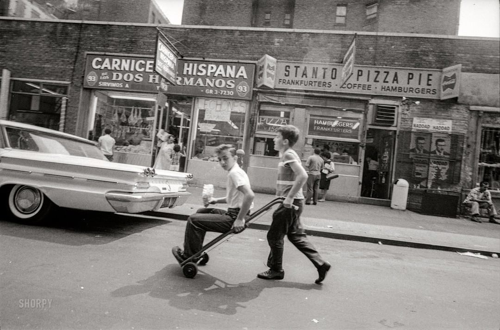

July 1964. “Two boys in street, one riding inside hand truck.” First selection from the epic oeuvre of New York street photographer Angelo Rizzuto (1906-1967), a “troubled recluse” whose work remained unknown and unappreciated until long after his death. (Photo & caption text via shorpy.com)